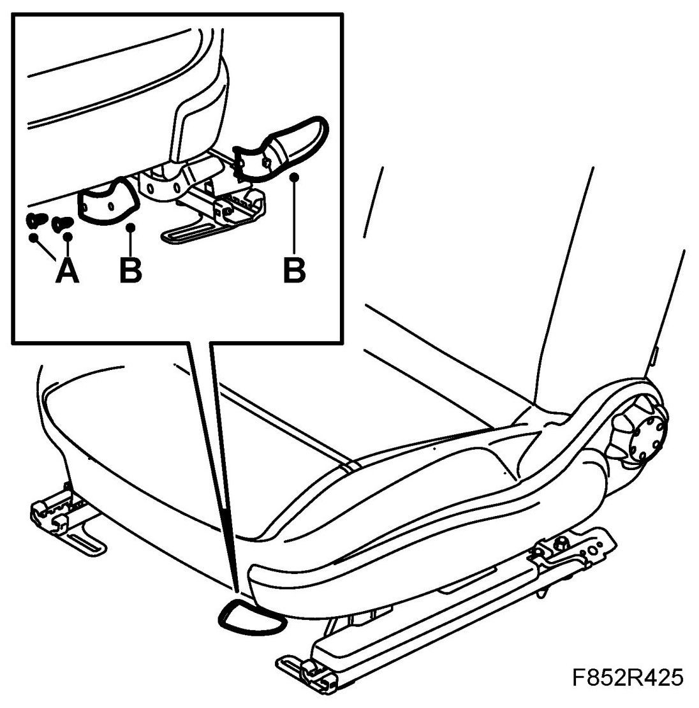
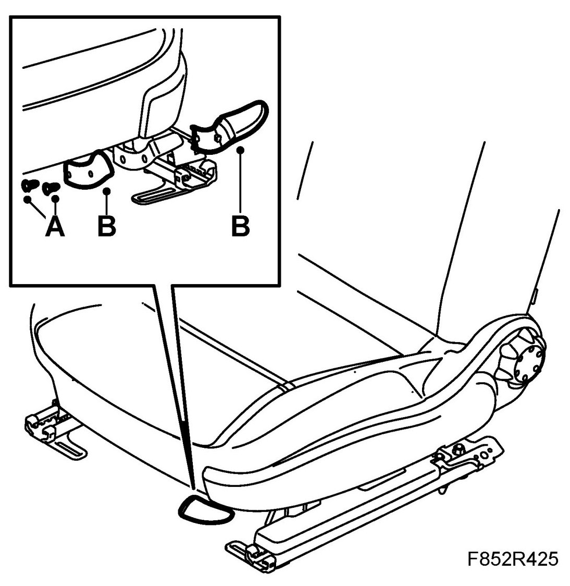

Handle, Longitudinal Adjustment, Front Seat
Handle, Longitudinal Adjustment, Front Seat
To remove
1. Position the seat at the rear position.
2. Remove the screws from the handle (A).

3. Remove the handle (B).
To fit
1. Fit the handle in the seat's control arm (B).

2. Fit the screws for the handle (A).
3. Position the seat in its original position.